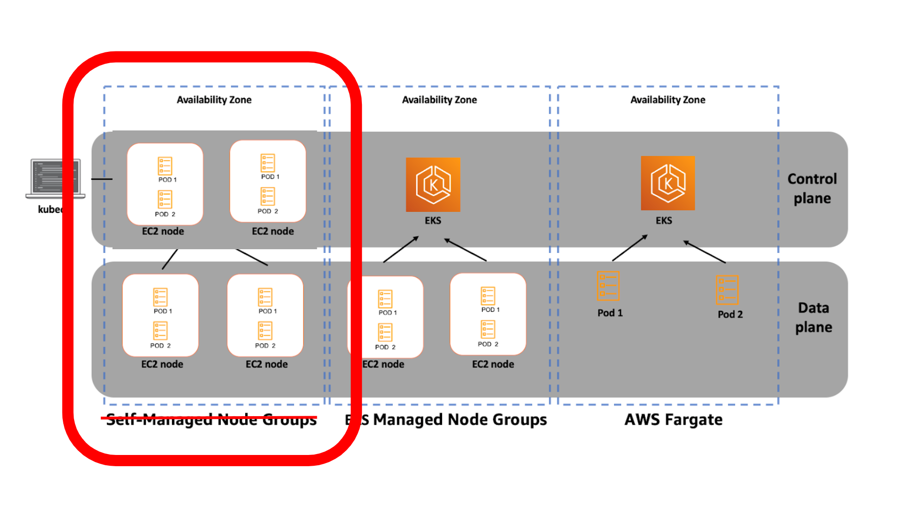

Upgrade A VM Based Cluster
關於我
- Che Chia Chang
- SRE @ Maicoin
- Microsoft MVP
- 投影片與講稿都在 chechia.net
- Etcd Workshop
- 鐵人賽 (Terraform / Vault 手把手入門)
We’re hiring!
故事
- 為何要 AWS 自架 K8s
- 事前閱讀文件，規劃
- Upgrade Etcd
- Upgrade kube-apiserver / kube-controller-manager / kube-scheduler
- Upgrade Node
- Q&A
什麼是 VM-based Cluster
- Managed Kubernetes Service (GKE, EKS, AKS)
- 公有雲託管 control plane，透過雲提供的介面控制
- self-hosted Kubernetes
- cloud formation template ec2 node
什麼是 VM-based Cluster
公有雲只提供 VM，自己用其它工具搭 K8s Components
- kubeadm, kops, kubespray / docker, containerd, cri-o / container or systemd / …
- 自己管理 control plane，包含 etcd, apiserver, controller-manager, scheduler
- 依需求選用公有雲提供的架構，ex VPC, ELB, EBS, S3, RDS, IAM, Route53, CloudWatch, CloudTrail, …
K8s components

Self-hosted K8s

Self-hosted control plane

所以為何要在AWS上自架 K8s？
因為 2016 年的時候沒有 eks
因為 2016 年的時候沒有 eks
- 2014/10/15 kubernetes v0.4 github
- 2014/11/04 GKE release for 0.4.2
- 當時有很多解決方案再提供 self-hosted k8s，基於這些方案，我們自己架了一個
- 2017/10/24 AKS generally available
- 2018/06/05 EKS generally available
Self-hosted control plane
self-hosted control plane 其實不難，那時有很多成熟的解決方案
- k8s summit Etcd Workshop
- 降低服務商依賴
- 可以跨雲，跨地端，混合雲
- 自訂化，換 VM disk image，CNI，CSI，Ingress Controller
- 成本控制
結束背景，開始升級
起飛前規劃
需要事前研究跟規劃
- 確認目前版本與目標版本
需要升級的 K8s Components
etcd
一個健康的 etcd cluster 可以幾乎 zero downtime rolling upgrade
如何確認 etcd 升版後是好的
apiserver
scheduler and controller manager
application controllers
測試
smoke testing
- 直接驗證可行性
- 針對有使用的功能或是重要功能做測試
- 快速執行，早期發現問題
- 問題不是有問題，而是有問題太晚發現
例如
ingress controller
- 測試腳本中測試 create / update / delete ingress
完整的多環境測試
好的監測
Infra
Vishwakarma
https://github.com/getamis/vishwakarma/tree/master/examples/kubernetes-cluster-cilium-vxlan
監測
while true; do
kubectl get pods -n kube-system;
sleep 2;
done
監測
- etcd dashboard
- k8s api dashboard
Upgrade
- 選擇你的版號